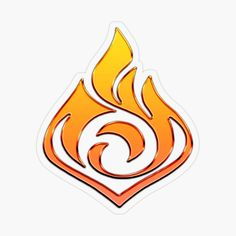

Пиро

Огненная стихия Пиро - сильнейший элемент в игре, к тому с наибольшим количеством персонажей. Глаз Бога этого элемента получают лишь достойные люди, сильные духом и телом, стремящиеся к своей цели несмотря ни на что.
Доступные элементальные реакции: Пар, Таяние, Перегрузка, Горение, Кристаллизация, Рассеивание
Доступные персонажи с Глазом Бога: Эмбер, Сян Лин, Дилюк, Ху Тао, Йоимия, Кли, Беннет, Синь Янь, Янь Фэй